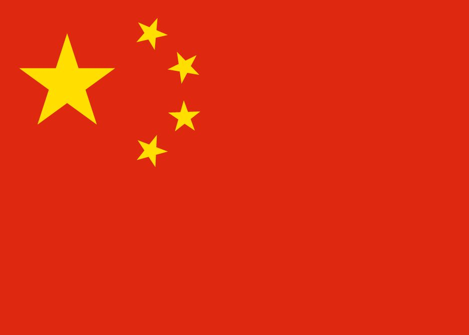

Chine

Création: 1960
Bases de lancément:
-
Jiuquan Satellite Launch Center, Gansu
-
Taiyuan Satellite Launch Center, Shanxi
-
Xichang Satellite Launch Center, Sichuan
-
Wenchang Space Launch Site, Ile de Hainan
Le programme spatiale chinois a commencé en 1956, avec le developpement de missiles balistiques, comme la plupart des programmes spatiales. En 1970, la Chine a lancé son premier satellite, Dong Fang Hong, qui d'ailleurs est toujours on orbite.
La Chine a aujourd'hui l'un des plus importants programmes spatiales, exploitant une station spatiale modulaire propre et ayant lancé plusieurs satellites et meme une mission à Mars.
Les companies
La Chine comme les USA ont plusieurs companies spatiales privés qui sont apparus en plus de la principale companie statale, CNSA. Notamment, LandSpace qui a envoyé le premier fusée alimenté par methane dans l'espace et iSpace, la première companie
spatiale privée chinoise.